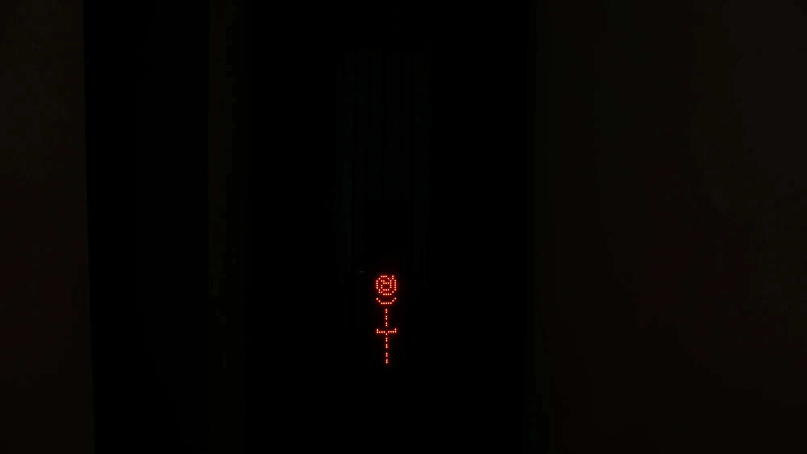
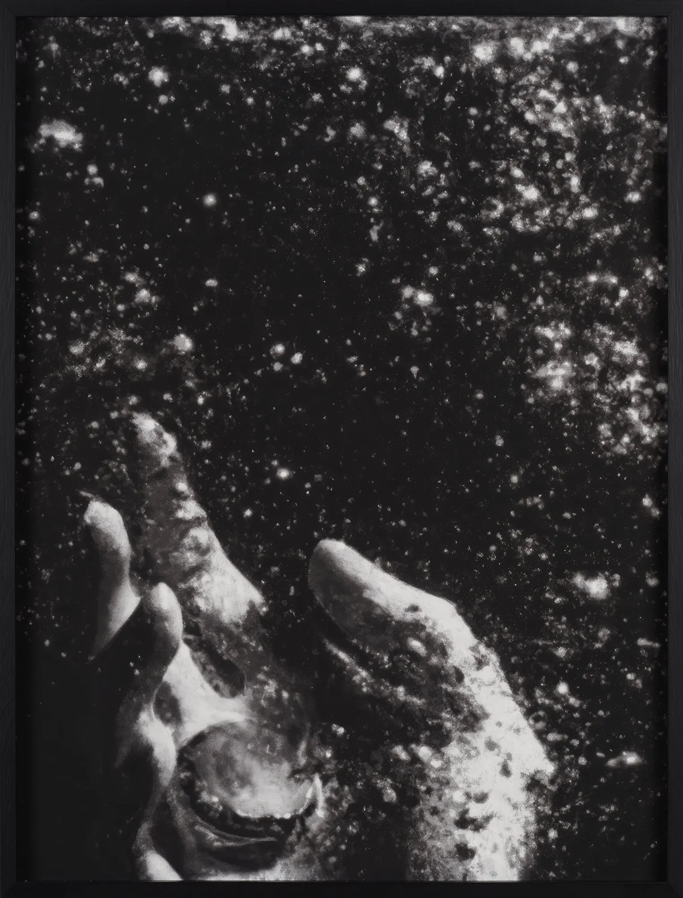
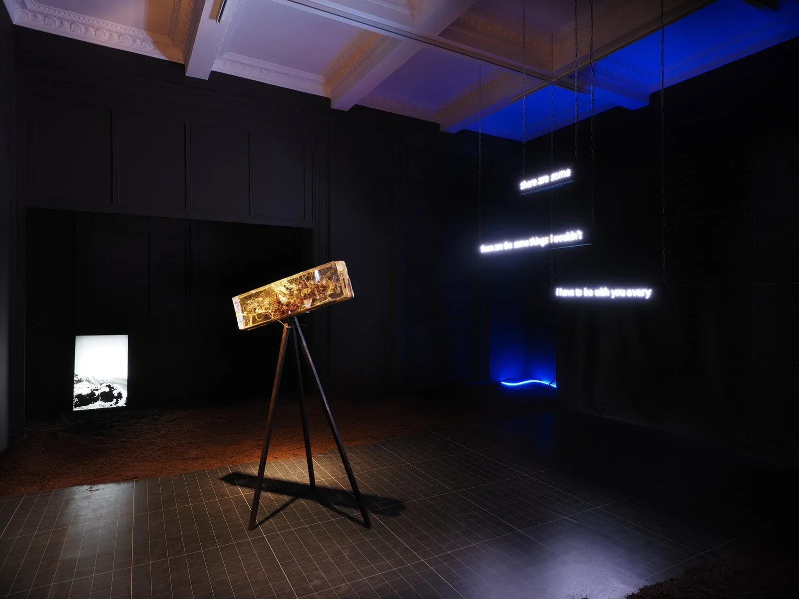
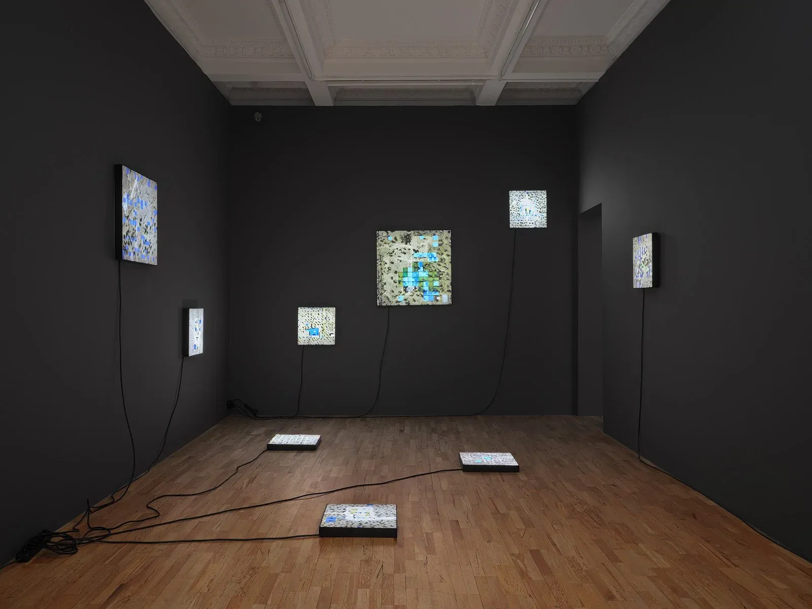
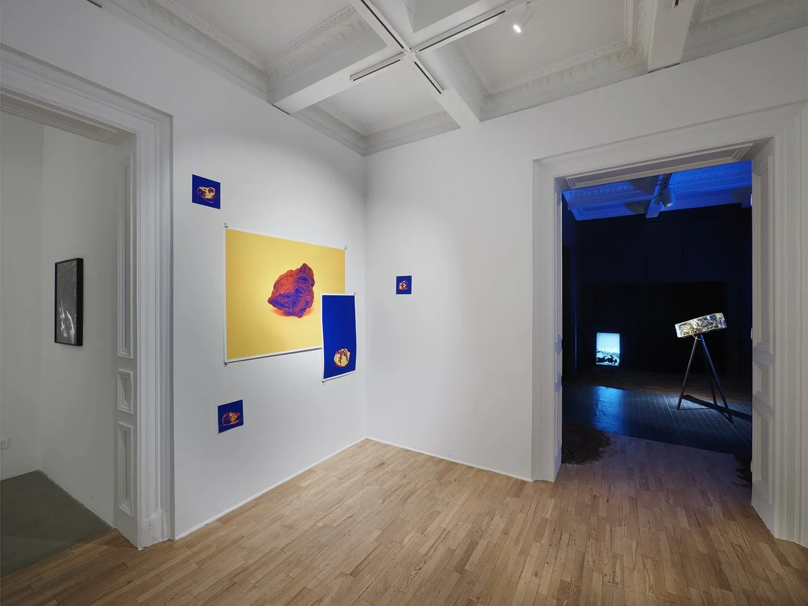
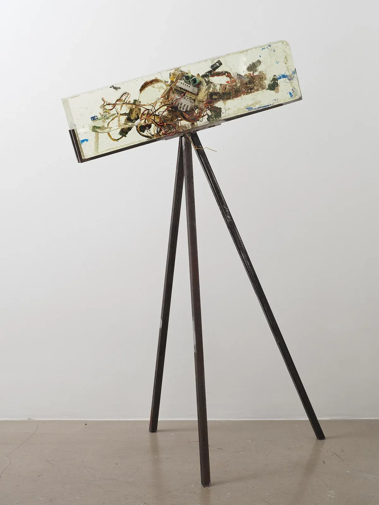

23012023
all familiar, all foreign (her şey tanıdık, her şey yabancı)
Exhibition (solo), Installation, VideoVersus Art ProjectUlya Soley- About
- First solo exhibition in Istanbul, combining photography, video, sculpture and text into a speculative archaeological site on digital footprints, algorithmic divinities and power and technology.
- Place
- Istanbul
- Shown
- 21.03.–30.04.2023all familiar, all foreign, Versus Art Project, Istanbul, curated by Ulya Soley
- 11.2023all familiar, all foreign (re-staging), TOP e.V., Berlin, curated by Ulya Soley
- Links
- Original ↗
Press ↗






Press
- 31.03.2023all familiar, all foreign (exhibition review) ↗Gazete Oksijen
- 21.03.2023all familiar, all foreign ↗Istanbul Architecture Diary
- 21.03.2023all familiar, all foreign ↗Cornucopia
- 03.2023Yelta Köm kurgusuyla geleceğe dair arkeolojik bir alan ↗Bant Mag
- 03.2023AJANDA: Yelta Köm | her şey tanıdık, her şey yabancı ↗Studio Mercado
- 2023Art Exploration of the Month: "her şey tanıdık, her şey yabancı" (all familiar, all foreign) ↗Hitit Seramik